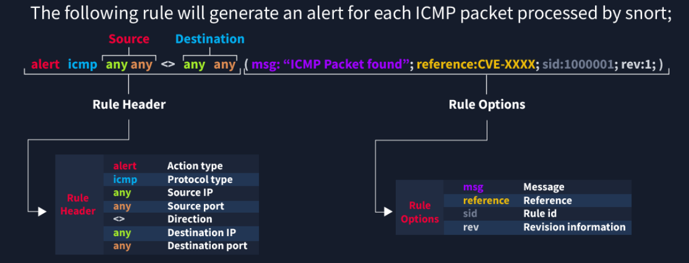

Snort#
Snort is an IDS/IPS tool created by Cisco Talos. It has been embedded into cisco security appliances but can also be used as a standalone tool, with either a paid (subscription) or ‘community’ (free) edition. The difference between the two is what ‘rules’ are provided for detections. In the subscription model, you are provided with the rules as soon as they are created by Talos. The free edition is delayed two weeks. THM has a snort module (https://tryhackme.com/r/room/snort) where some of this content is from. They are free rooms, so I would suggest giving them a go.
I’ve also built Snort in my Home lab, you can find it here
Snort Modes#
Intrusion Detection System#
In IDS mode, traffic must be mirrored to the machine hosting the Snort instance. This can be done in a physical switch (SPAN port in cisco world) or promiscuous mode in a VmWare vSwitch. Once malicious traffic is detected it is only logged. For IDS mode to be most effective, it will need to be connected to a monitoring system, such as a SIEM. As an IDS only monitors traffic, it can also be used to test rules in a new system to ensure it doesn’t flag genuine traffic; before it is then swapped to IPS mode.
The general structure for launching Snort in IDS is
snort -c [rules file] -l [log directory] -A full -K ASCII (if you want alerts logged as readable) -i [your interface ie eth0]
Intrusion Prevention System#
While an IDS monitors traffic, it will only alert when bad traffic has been detected, it won’t stop it. A more robust option is to block the traffic before it becomes a problem. Of course, it is then also possible to block legitimate traffic, so you’ll need to be careful here. In order for Snort to block traffic, it must sit inline to the traffic. This can be in the DMZ (as a part of the route between internal and external traffic), or internal between networks. Either way, traffic can only be blocked if it passes through.
Pcap analyser#
Rules#

Breaking this out, the basic rule structure is [action] [protocol] [source IP & Port] [Direction] [Destination IP & Port] (msg:”[searchable string];[sid:#####];[extras])
The SID is required, it is the ID of the rule. No SID -> no Rule
I’ve added the message as required, though I’m not sure it is
The extras are the strength of a snort rule
Required Sections#
Actions#
The actions are what snort does when the rule is triggered. If we are running in IDS mode, then ‘Alert’ is the most likely case. Alternatively, ‘Log’ will record the packet but won’t create an alert.
In IPS mode, you have ‘drop’ and ‘reject’. Both will drop the packet and log the event, however ‘Reject’ will also kill the session (I’m guessing with a RST packet?)
Protocols#
The protocols define what content in the rule is actually used. You have IP, ICMP, TCP and UDP.
As ports are a TCP and UDP property, it doesnt make sense to filter the others based on ports. Just replace these with an ‘any’.
IP & Port (source and destination)#
This is where things get a bit messier. While IP and Port are standard properties, you are also able to filter the rule based on multiple IPs and ranges
Lets take the standard rule to filter HTTP traffic
alert tcp any any -> any 80 (msg:”HTTP Traffic Detected”;sid:10000001)
This will alert to any traffic over HTTP - If we are running HTTPS this shouldn’t be used?
Lets say we have a legacy server that must be over HTTP, for reasons. The rule can be updated to exclude a specific IP
alert tcp any any -> 192.168.0.100 80 (msg”HTTP Traffic Detected;sid:1000001;rev:”1.0”)
Oops, that only logs traffic to that server, but we want it excluded, this can be achieved with a ! (negation operator according to THM)
alert tcp any any -> !192.168.0.100 80 (msg”HTTP Traffic Detected;sid:1000001;rev:”1.1”)
Great, we have achieved the basics. Being an intranet we can take this a bit further though. Why would an external IP address be trying to access our intranet? We can exclude internal ranges too, however this will need to be a new rule
alert tcp !192.168.0.0/24 any -> 192.168.0.100 80 (msg”EXTERNAL HTTP Traffic Detected;sid:1000002;rev:”1.0”)
The reason this has to be a new rule is that both sides must match. The first rule has detected anything not to the target server, but we also need to detect external ranges to the server.
Lastly, lets add another restriction to our scenario. We have a jump box in our internal range which is used by contractors. They don’t need to access our intranet server.
alert tcp 192.168.0.99 any -> 192.168.0.100 80 (msg”JUMPBOX HTTP Traffic Detected;sid:1000003;rev:”1.0”)
I put this as a new rule, but I think you could just add it as a second IP in the alert. Enclose the field in square brackets and you can create a comma separated list (same way Python does it).
When filtering Ports, you have some extra options. Again I’ll relate these back to Python but this time with arrays.
Detect a port: 21
Detect all except a port: !21
Detect a subsection range of ports (inclusive): 100-1024
Detect a upper bound of ports (inclusive): :1024
Detect a lower bound of ports (inclusive): 1024:
Detect a list of ports: [21,23]
Direction#
The direction is a key part of the rule. Previously I used the direction as one way, as the destination was a specific server. You can also have a bi-directional rule to detect any usages of a port. This throws the ‘source’ and ‘destination’ titles out the window, and you lose a lot of control, but it’s easier for a wider scope of detection.
alert tcp any any <> any 80 (msg”JUMPBOX HTTP Traffic Detected;sid:1000003;rev:”1.0”)
Msg - Message#
SID - Snort Rule ID#
The SID is just the unique key of the rule. There are reserved spaces however
<100: Reserved
100-999,999: “Build Rules” - Community / Talos Rules 1,000,001+: User Defined Rules
The Extras#
rev - Revision#
Best practice when changing rules is to update the rule. This means keeping the SID the same and updating the revision. Normally this is done when updating the ‘extras’, as changing the source/destination and action types should be a new rule.